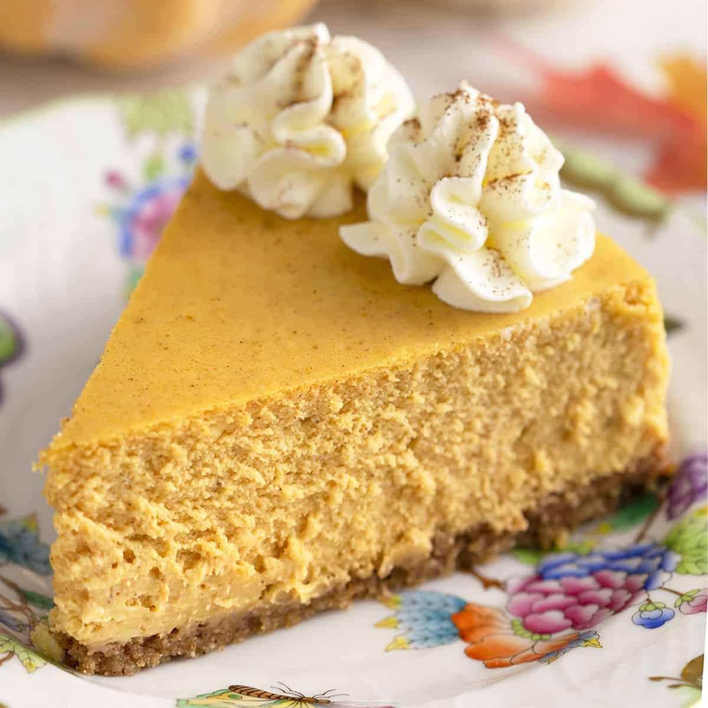

Keto Pumpkin Cheesecake

A cheesecake for pumpkin pie lovers!
This Keto Pumpkin Cheesecake recipe is a delicious cheesecake recipe with a pumpkin twist.
Ingredients
- 24 oz. Cream Cheese, softened (3x 8 oz. Packages)
- 4 Eggs
- 1 Additional Egg Yolk
- 2 Cups Ground Nuts (Almonds or Pecans)
- 15 oz. Prepared Pumpkin (1x Can - no spices added)
- 6 Tbsp. Melted Butter
- 3 Tbsp. Sour Cream
- 1 1/4 Cup Erythritol, powdered
- 1 Tbsp. Pumpkin Pie Spice
- 1 tsp. Vanilla Extract
Instructions
Crust
- Preheat oven to 350 degrees (F)
- Mix 1/4 Cup Erythritol, Ground Nuts, and Butter
- Press mixture into bottom of springform pan
- Bake 20 minutes
Pumpkin Mixture
- Turn oven down to 300 degrees (F)
- Allow all cold ingredients to reach room temperature
- Using an electric mixer, combine Cream Cheese and remaining 1 Cup Erythritol at slow to medium speed.
- Add all other ingredients except Eggs, Egg Yolk, and Pumpkin
- Once mixture is smooth, add Eggs and Egg Yolk, one at a time, mixing slowly
- Fold Pumpkin into batter and mix until blended
- Add pumpkin batter to greased springform pan
- Place the pan on large sheet of aluminum foil
- Fold foil around the pan to create a watertight barrier around the cheesecake
- Place springform pan into larger pan and fill the larger pan half way with water
- Place water bath and cheesecake into the oven
- Bake for 1 hour, then reduce heat to 200 degrees (F)
- Bake for 1 hour, then turn off oven while leaving the cheesecake in until the oven is completely cool
- Once completely cool, cheesecake can be transfered to the refrigerator
Home